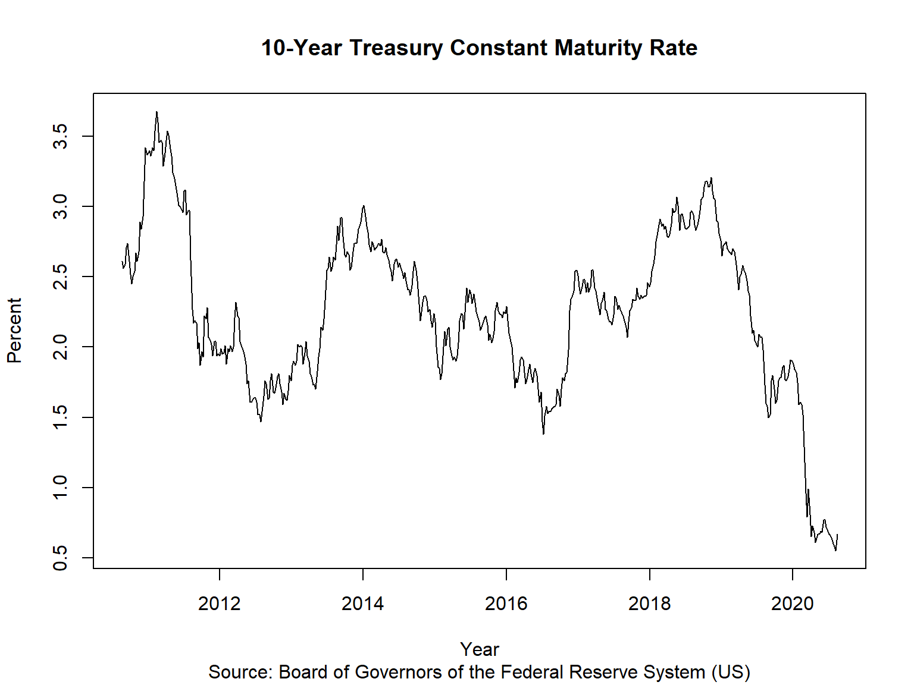
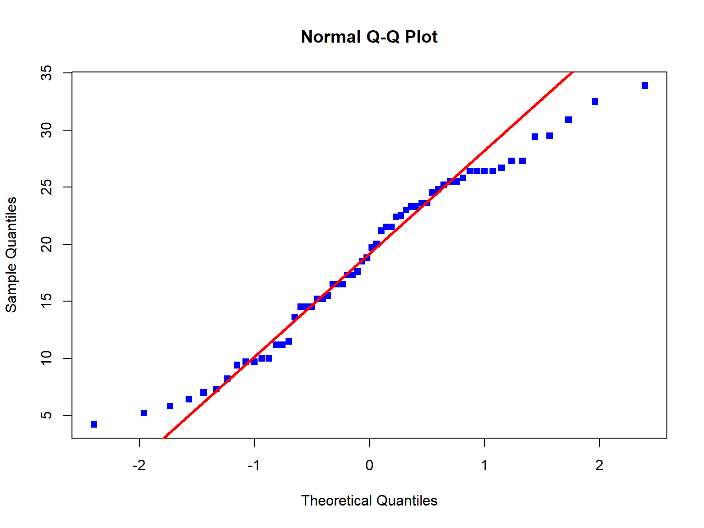
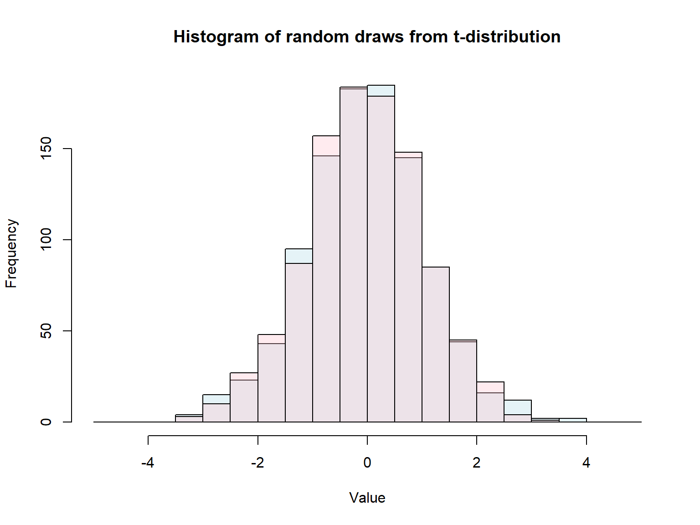
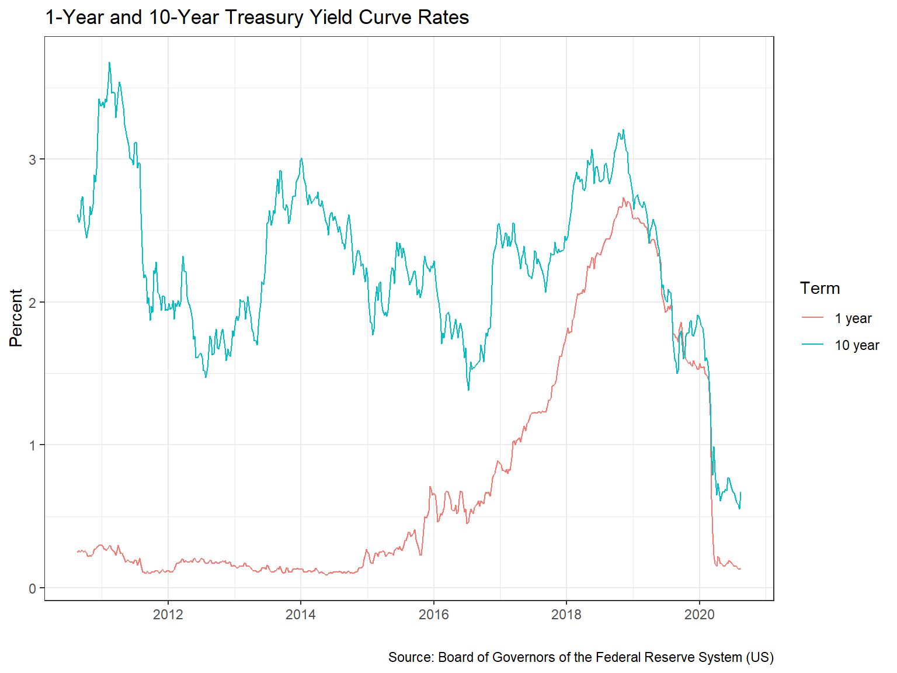

Introduction to R via CS1
Alex Garbiak
24 August, 2020
Why are we here?
- To pass the CS1 (Part B) exam 👍
- To be persuaded that \(R\) is great for actuarial work 👀 … maybe next time.
The Basics
Yes … it’s HTML, not R😏
Background 📚
This presentation is to help IFoA actuaries tackle Part B of the CS1 exam.
- Some prerequisites:
- Understand the CS1 Actuarial Statistics material
- Install
R - Install RStudio
RStudio layout 🌍

R loves vectors ❤️
R prefers vectorised operations (over concepts like for loops)
## [1] 3 4 5 6 7 8 9 10 11 12R also loves variables 💘
We assign values to variables using the <- (“assignment”) operator
x <- 1:10
y <- x + 2
x <- x + x # Notice that we can re-assign values to variables
z <- x + 2
y
## [1] 3 4 5 6 7 8 9 10 11 12
z
## [1] 4 6 8 10 12 14 16 18 20 22Even though \(z\) is assigned the same way as we assigned \(y\), note that \(y \neq z\) so execution order matters in \(R\)
Add power with functions 🚀
We now add functions to the \(R\) code which has the form function_name(arguments = "values", ...)
# Combine function, used often to create vectors:
x <- c(1:3, 6:20, 21:42)
# Another function with arguments:
y <- sample(x, size = 3)
y## [1] 39 22 16Matrices 🏛
Let’s create a matrix in \(R\)
Note: Matrix multiplication requires the %*% syntax
## [,1] [,2] [,3]
## [1,] 30 36 42
## [2,] 66 81 96
## [3,] 102 126 150Dataframes 🏭
A data.frame is a very popular data structure used in \(R\). Each input variable has to have the same length but can be of different types (strings, integers, booleans, etc.).
# Input vectors for the data.frame
name <- c("Mercury", "Venus", "Earth", "Mars", "Jupiter", "Saturn", "Uranus", "Neptune")
surface_gravity <- c(0.38, 0.904, 1, 0.3794, 2.528, 1.065, 0.886, 1.14)
# Create a data.frame from the vectors
solar_system <- data.frame(name, surface_gravity)
str(solar_system)## 'data.frame': 8 obs. of 2 variables:
## $ name : chr "Mercury" "Venus" "Earth" "Mars" ...
## $ surface_gravity: num 0.38 0.904 1 0.379 2.528 ...Logical expressions ⚗️
R has built in logic expressions:
| Operator | Description |
|---|---|
| < (<=) | less than (or equal to) |
| > (>=) | greater than (or equal to) |
| == | exactly equal to |
| ! | NOT |
| & | AND (element-wise) |
| | | OR (element-wise) |
| != | not equal to |
Filtering and Subsetting 🔬
We can use logical expressions to effectively filter data
Here we subset the data using the [...] syntax
## [1] 1 2 3 4 6Selecting objects 🔬
We can select objects using the $ symbol - see ?Extract for more help here
## name surface_gravity
## 5 Jupiter 2.528Expand R with packages 📦
We can extend \(R\)’s functionality by loading packages:
- Did you get an error from \(R\) trying this?
- To load packages they need to be installed first:
install.packages("ggplot2")
Importing data 📃
We’ll focus on exam likely candidates with .csv and .RData file imports
# Import csv files with read.csv() function:
csv_data <-
read.csv("intro-to-r-for-cs1_files/data/USTreasury_1YR.csv")
# For RData files, we use the load() function:
load("intro-to-r-for-cs1_files/data/USTreasury_10YR.RData").txt files can be loaded using the read.table() function
Random Variables 🎰
\(R\) was designed to be used for statistical computing - so it handles randomness well!
## [1] 3.4627Probability Distributions 🎰
Rhas in-built functions for probability distributions:- d<distribution-name> \(:=\) density (PDF), i.e. \(f_X(x)\)
- p<distribution-name> \(:=\) probability distribution cumulative function (CDF), i.e. \(F_X(x) =\boldsymbol{P}(X \leq x)\)
- q<distribution-name> \(:=\) quantile function, i.e. return \(x\) such that \(\boldsymbol{P}(X \leq x) = p\)
- r<distribution-name> \(:=\) random deviates, i.e. (psuedo) random number generator for a given distribution
- Where <distribution-name> \(=\) Normal, uniform, lognormal, Student’s t, Poisson, binormal, Weibull … see
?distributions()for more information
Probability Distributions Examples 🎰
| R Code | Definition |
|---|---|
rnorm(1) |
Generates \(x_1\) where \(X \sim \mathcal{N}(0,\,1)\) |
rnorm(y, mean=10, sd=2) |
Generates \(\{y_1,\,y_2,\,\dots\}\) with \(Y \sim \mathcal{N}(10,\,2^2)\) |
runif(3, min=5, max=10) |
Generates \(\{z_1,\,z_2,\,z_3\}\) where \(Z \sim \mathcal{U}(5,\,10)\) |
dbinom(4, size=5, prob=0.5) |
Computes \(\boldsymbol{P}(X = 4)\) where \(X \sim \mathcal{Bin}(5,\,0.5)\) |
pgamma(0.2, shape=2, rate=2)*See footnote |
Computes \(F_Y(0.2)\) where \(Y \sim \mathcal{\Gamma}(2,\,2)\), i.e. \(\boldsymbol{P}(Y\leq 0.2)\) |
qexp(0.5, rate = 2) |
Determines smallest value of \(z\) for \(\boldsymbol{P}(Z \leq z) = 0.5\) where \(Z \sim Exp(2)\) |
*This is how the \(\Gamma\) distribution is parametrised in “FORMULAE AND TABLES for EXAMINATIONS of THE INSTITUTE and FACULTY OF ACTUARIES”
Data Analysis
Exploratory Data Analysis 🔬
R is great for calculating “suitable summary statistics”
## Min. 1st Qu. Median Mean 3rd Qu. Max.
## 12.00 25.25 45.50 51.50 82.75 93.00## [1] 31.80234Calculating correlations 📓
Let’s calculate the “Pearson’s, Spearman’s and Kendall’s measures of correlation for bivariate data” using the cor(x, y, method = "method-name") function*:
# Note: Data was loaded in the "Importing Data" section*
cor(
x = csv_data$WGS1YR,
y = USTreasury_10YR$WGS10YR,
method = "pearson"
)## [1] 0.2548368*Using the US Treasury data we loaded here.
Statistical inference
Population mean confidence intervals 🔭
Let’s calculate confidence intervals for “the mean … of a normal distribution” using Student’s t-Test using the t.test() function:
set.seed(42) # To fix result
# We create x_1, x_2, ... x_100 with X ~ N(0,1)
x <- rnorm(100)
# 99% CI for population mean:
as.vector(
t.test(x, conf.level = 0.99)$conf.int
)## [1] -0.2409877 0.3060174Population variance confidence intervals 🔭
We can also calculate confidence intervals for “the variance of a normal distribution” using the \(\chi^2\) distribution:
set.seed(42) # To fix result
# We create x_1, x_2, ... x_100 with X ~ N(0,1)
x <- rnorm(100)
degrees_freedom <- length(x) - 1
sample_var_x <- var(x)
# 95% CI for population variance:
c(
degrees_freedom * sample_var_x / qchisq(0.975, degrees_freedom),
degrees_freedom * sample_var_x / qchisq(0.025, degrees_freedom)
)## [1] 0.8359784 1.4634191Simple linear regression 📡
Let’s “fit a simple linear regression model to a data set” using the lm(formula) function and the symbolic syntax predicted ~ explanatory(s)
# Note: "women" is a built-in dataset in R
simple_linear_model <- lm(weight ~ height, data = women)
summary(simple_linear_model)$coefficients## Estimate Std. Error t value Pr(>|t|)
## (Intercept) -87.51667 5.9369440 -14.74103 1.711082e-09
## height 3.45000 0.0911365 37.85531 1.090973e-14We have a model for weight as:
weight = intercept\(_{(-87.52)}\) + \(\beta _{(3.45)}\) * height
Multiple linear regression 🚀
Let’s expand this and “fit a multiple linear regression model to a data set” using the lm() function again, a data.frame as our data and the symbolic notation:
\(\hat{Y} = \beta_0 + \beta_1X_1 + \beta_2X_2 + \,_{\dots}\, + \beta_nX_n\)
Generalised linear models 🌌
To “fit a generalised linear model to a data set” in \(R\) we make use of the glm() function. Here we generalise:
- Predicted variable \(Y\) follows a exponential family distribution
- Explanatory variables form a linear predictor \(\beta_0 + \beta_1X_1, \, \beta_2X_2, \, \dots, \, \beta_nX_n\)
- We link \(Y\) and the linear predictor using a link function
Plotting
Base plotting 📉
We need to be able to “… undertake exploratory data visualizations”, here we use the plot() function:
plot(
x = USTreasury_10YR$DATE, y = USTreasury_10YR$WGS10YR, # Data
main = "10-Year Treasury Constant Maturity Rate", # Title
sub = "Source: Board of Governors of the Federal Reserve System (US)",
xlab = "Year", ylab = "Percent", # Axis labels
type = "l" # Type of plot - here we use a l(ine) graph
)Scatter plot 📉

Producing Q-Q plots 📉
We can produce Q-Q plots using the qqnorm() and qqplot() functions. Add a theoretical line using the qqline() function.
Q-Q plot 📉

Producing historgrams 📉
Histograms can be generated using the hist() function:
set.seed(42) # Fix the result
# Histogram of random draws from the t-distribution
hist(rt(1000, df = 10),
# Use breaks argument to (optionally) control the binning
breaks = seq(from=-5, to=5, by=0.5),
col = rgb(173,216,230,80, max = 255), # Colour
main = "Histogram of random draws from t-distribution",
xlab = "Value"
)
# Add second histogram
y <- rt(1000, df = 20)
hist(y, col = rgb(255,192,203,80, max = 255), breaks = 21,
add = TRUE) # Add onto existing plotHistogram 📉

Plotting with ggplot2 📈
Plot with ggplot() in libary(ggplot2), defining your aesthetics with aes() and the type of chart with the geom_() functions and you might become a data journalist
# Join datasets together: csv_data (treating Date format) and USTreasury_10YR
yield_data <- data.frame(DATE = as.Date(csv_data$DATE), yield_rate = csv_data$WGS1YR, term = "1 year")
yield_data <- rbind(yield_data,
data.frame(DATE = USTreasury_10YR$DATE, yield_rate = USTreasury_10YR$WGS10YR, term = "10 year"))
library(ggplot2)
caption <- "Source: Board of Governors of the Federal Reserve System (US)"
p <- ggplot(yield_data,
aes(x = DATE, y = yield_rate, colour = term)
) +
geom_line() +
labs(x = "", colour = "Term", y = "Percent",caption = caption) +
ggtitle("1-Year and 10-Year Treasury Yield Curve Rates") +
theme_bw()ggplot2 Plot 📈

CS1 Actuarial Examples
CS1 Question 1 📔
- Given a sample from \(X \sim \mathcal{N}(\mu,\,\sigma^{2})\),
Calculate the sample mean, \(\bar{x}\)
Calculate a 95% confidence interval (“CI”) for \(\mathbb{E}[X]\)
Calculate a 95% CI for \(\mathbb{E}[X]\) using a bootstrap method with a sample size of 10,000
CS1 Question 1: Answer (Part 1) 📖
# We have X equal to:
x <-
c(0.20, 0.40, 1.20, 0.55, 0.75,
1.10, 0.50, 0.70, 0.55, 0.60,
0.65, 0.55, 0.50, 0.50, 0.45,
0.65, 0.55, 0.30, 0.50, 0.45
)
# 1. Expected value of X is:
mean(x)## [1] 0.5825CS1 Question 1: Answer (Part 2) 📖
Given \(X \sim \mathcal{N}(\mu,\,\sigma^{2})\) with unknown population variance, a 95% CI for \(\mathbb{E}[X]\) is:
confidence_level <- 0.95
confidence_interval <-
c(
(1 - confidence_level)/2,
1 - (1 - confidence_level)/2
)
degrees_freedom <- length(x) - 1
critical_value <- qt(confidence_interval, degrees_freedom)
mu <- mean(x)
sigma <- sqrt(var(x))
c(
mu - abs(critical_value[1]) * sigma / sqrt(length(x)),
mu + abs(critical_value[1]) * sigma / sqrt(length(x))
)## [1] 0.4737234 0.6912766CS1 Question 1: Answer (Part 3) 📖
We can also calculate a 95% CI for \(\mathbb{E}[X]\) using a bootstrap method:
set.seed(42)
sample_size <- 10000
confidence_level <- 0.95
confidence_interval <-
c(
(1 - confidence_level)/2,
1 - (1 - confidence_level)/2
)
x_bootstrapped <-
replicate(sample_size,
mean(sample(x, replace = TRUE))
)
quantile(x_bootstrapped, probs = confidence_interval)## 2.5% 97.5%
## 0.49 0.69CS1 Question 2 📔
- Given the dataset “house_data.csv” (given below):
Fit a generalised linear model to predict house prices using a Gamma distribution
State the formula of the model fitted
Review the model fit
house_data <- read.csv("intro-to-r-for-cs1_files/data/house_data.csv")
head(house_data[,-c(1,8:11)]) # Glimpse of data set## Region YearBuilt RoofType HouseSize Bathrooms Bedrooms
## 1 5 2003 1 1710 3.5 3
## 2 5 2002 1 1786 3.5 3
## 3 1 1965 2 1040 2.0 3
## 4 1 1962 2 912 2.0 2
## 5 6 1960 2 1253 2.5 2
## 6 6 1970 1 1004 2.0 2CS1 Question 2: Answer (Part 1) 📖
Let’s build a GLM with response variables “YearBuilt”, “HouseSize” and “RoofType”:
CS1 Question 2: Answer (Part 2) 📖
## (Intercept) YearBuilt HouseSize RoofType
## 7.829688e-05 -3.492117e-08 -2.006639e-09 6.302872e-09We have fit a model with \(\bar{\nu} = \frac{1}{\mu} =\) 12,772 \(-\) 28,635,925\(x_1 \,-\) 498,345,682\(x_2 \,+\) 158,657,830\(x_3\)
where \(\bar{\nu}\) is the predicted variable “Price” and \(x_1,\, x_2,\, x_3\) are the “YearBuilt”, “HouseSize” and “RoofType” variables respectively.
CS1 Question 2: Answer (Part 3) 📖
##
## Call:
## glm(formula = Price ~ YearBuilt + HouseSize + RoofType, family = Gamma(link = "inverse"),
## data = house_data)
##
## Deviance Residuals:
## Min 1Q Median 3Q Max
## -0.74826 -0.09318 0.01491 0.10941 0.66029
##
## Coefficients:
## Estimate Std. Error t value Pr(>|t|)
## (Intercept) 7.830e-05 5.274e-06 14.845 <2e-16 ***
## YearBuilt -3.492e-08 2.667e-09 -13.094 <2e-16 ***
## HouseSize -2.007e-09 8.738e-11 -22.965 <2e-16 ***
## RoofType 6.303e-09 8.191e-09 0.769 0.442
## ---
## Signif. codes: 0 '***' 0.001 '**' 0.01 '*' 0.05 '.' 0.1 ' ' 1
##
## (Dispersion parameter for Gamma family taken to be 0.0325146)
##
## Null deviance: 41.050 on 501 degrees of freedom
## Residual deviance: 17.681 on 498 degrees of freedom
## AIC: 11778
##
## Number of Fisher Scoring iterations: 5“YearBuilt” and “HouseSize” parameters are significant at the 0.1% level
Final remarks
Where to get more help 🆘
- Some recommendations:
- RStudio:
- Built-in cheat sheets (Help -> Cheatsheets)
- Package documentation and the
help()function - Tutorials via
library(learnr)package
- DataCamp’s free course: Introduction to R
- IFoA’s guide on “get up and running with R”
- RStudio:
Why not use Python?
- Sure, go for it!
- Use the right tool(s) for your problem*
- *Aspire to Jeff Bezos’ Regret Minimization Framework
What next? ⏭
- R is incredibly powerful: this presentation was built with R*, consider:
- Using the
library(tidyverse)suite of packages: enhancing your experience withR - Writing
Rcode within aRMarkdown(.Rmd) file: good for report writing - Integrating
RwithGit: use the Terminal to interact with a remote repo from the command line - Creating interactive applications in
RusingShiny
- Using the
*With heavy assistance from reveal.js and in hindsight I should have used the right tool for the right job … maybe next time 😏
The End
Download: PDF presentation
Download: HTML presentation
View: Source code